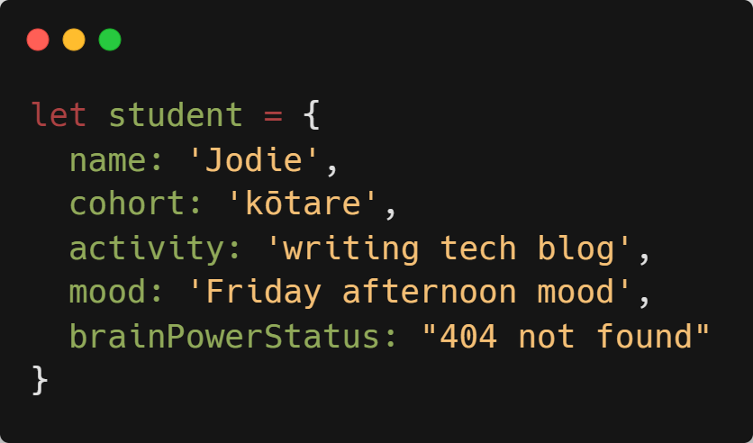
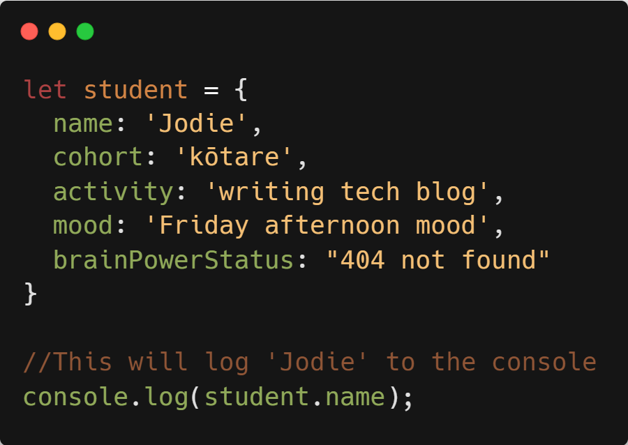
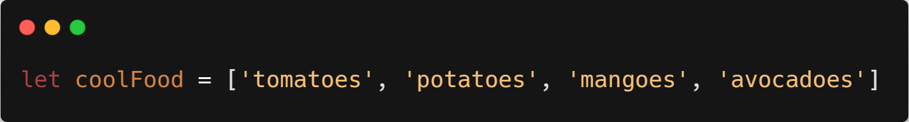
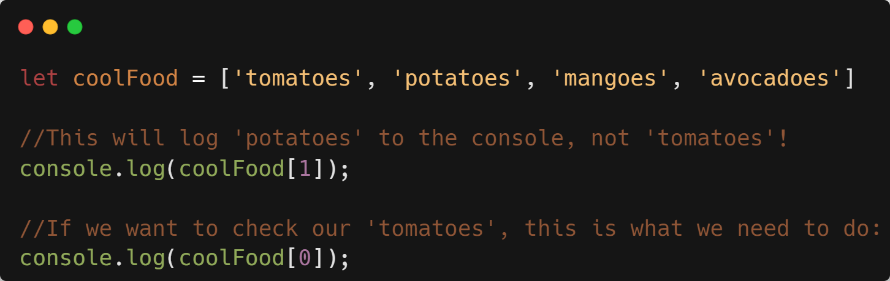

HTML, CSS, Javascript: an analogy
Before it's given any content, a website is a bit like an empty house. No rooms, no floors, nothing. Think of HTML as a builder and CSS as an artist. HTML will give your house a structure, by building floors, rooms, furniture, etc. Then CSS will make your house colourful, organised and pretty. It will paint the walls, organise the layout of each room, make your furniture smaller or bigger... Easy! Finally, Javascript is kind of the handyman who will take care of everything related to interacting with your house. Like opening doors, closing windows, switching the lights on and off, taking a shower...

JS control flow and loops
Tech explanation
Control flow in JavaScript is how your computer runs code from top to bottom. It starts from the first line and ends at the last line, unless it hits any statement that changes the direction. An example of such statements would be loops. Loops run based on if a certain condition is true. As long as it stays true, the code is going to keep executing.
Non-tech translation
I'm French, and I love crêpes! So today I'm going to keep making crêpes, following the recipe from top to bottom, until I run out of milk. As long as I've got milk, the crêpes are going to keep being made.

Source: Medium
What is the DOM?
Remember: When you make a website (or a house), HTML defines the structure, CSS provides the appearance and styling, and Javascript deals with interactivity (or water, power and Internet connections in your house). Now here comes the real MVP of the web: the DOM! It provides the missing link that ties your HTML, CSS and JavaScript together. It's like a gateway to all the HTML and CSS elements that the browser uses to display the page, and it also has functionality that allows Javascript to interact with those elements.
Source: Kirupa
Accessing data from objects vs arrays
Objects
Think of objects as ID cards. They're used to represent something that is made up or can be defined by a set of characteristics.
In tech language, these characteristics are called properties. They consist of a key and a value. For example,
name is our key and 'Jodie' is our value.
To access properties of an object, we use the keys and dot (or bracket) notation, like so:
Arrays
Think of arrays as big baskets in which you can put items in individual compartments. Each of these compartments are numbered and ordered, and they're called indexes.
Now we can't actually see those numbers, but now that we know they're here, we can use them to access our array's data with bracket notation. Beware! never forget this very interesting programming trick: indexes start counting at 0, not 1, like we poor humans do.
Source: Medium